MARKET NEWSROOM
The reporting
behind the signals
A visual source ledger for the selected market, connecting original reporting with the current intelligence view.
LEAD REPORTING
Stories setting the frame
The opening stories in the current regional source set.
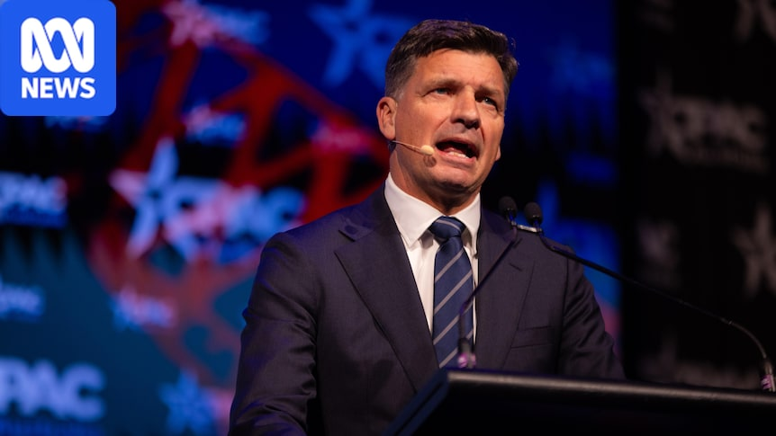
ABC News · 2026-10-10 20:48:21 UTC
Inside the conservative conference where Angus Taylor comes second to Pauline Hanson
VIEW STORY ↗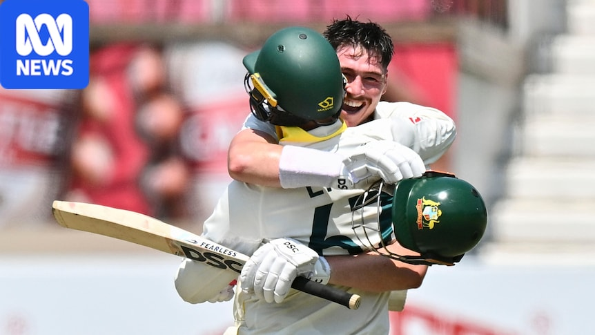
ABC News · 2026-10-10 20:44:26 UTC
Matt Renshaw's 190 turns Durban Test, providing Aussie batting blueprint
VIEW STORY ↗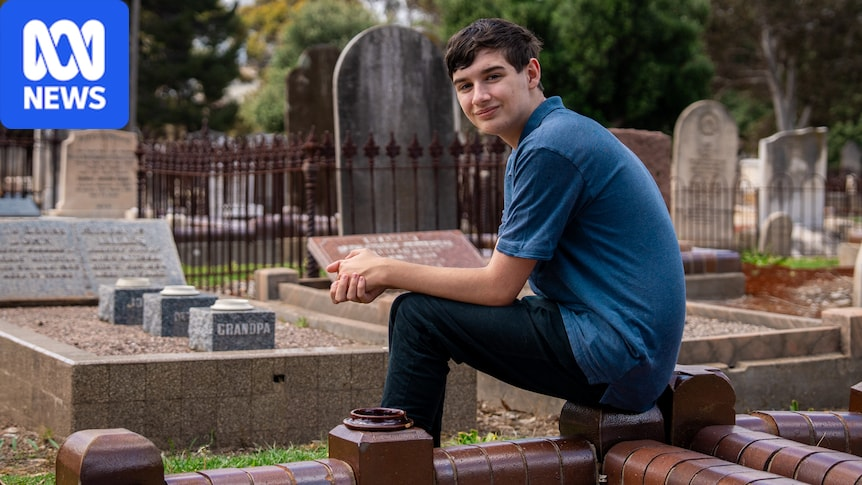
ABC News · 2026-10-10 20:40:40 UTC
Teens in state care ask for support to transition to adulthood
VIEW STORY ↗ABC News · 2026-10-10 20:31:57 UTC
Christa Pike released from hospital, back in prison after failed execution
VIEW STORY ↗MORE HEADLINES
Follow the reporting
The remaining 56 stories in the current source order.
Headlines 005—016 12 stories
005
ABC News · 2026-10-10 20:27:24 UTC
↗Businesses grapple with the cost of customers 'wanting to pay by card'
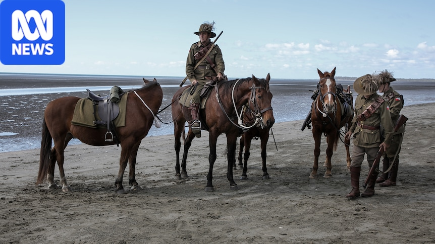
006ABC News · 2026-10-10 20:26:37 UTC
↗007Island horses take centre stage in movie project
ABC News · 2026-10-10 20:20:25 UTC
↗008Quick hits: AFL star in the sheds as Aussies go better than Bradman
ABC News · 2026-10-10 20:19:31 UTC
↗009Mineral royalties and technical colleges in duelling Victorian election pledges
ABC News · 2026-10-10 20:06:58 UTC
↗Man dies after entering tiger enclosure at UK zoo
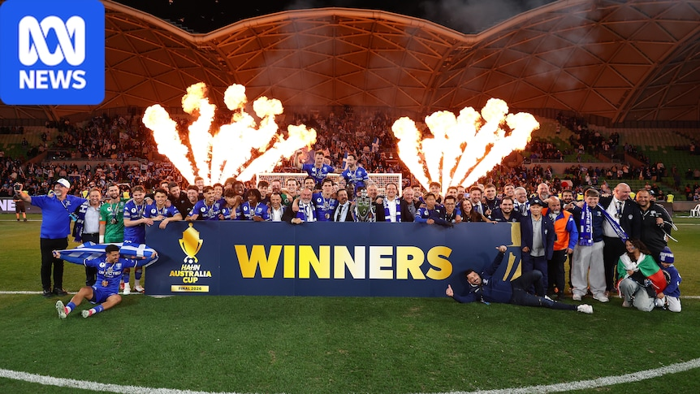
010ABC News · 2026-10-10 19:41:08 UTC
↗011South Melbourne stuns Melbourne Victory to claim Australia Cup
ABC News · 2026-10-10 19:33:39 UTC
↗012Piastri caught up in last-lap crash with teammate in Singapore GP sprint
ABC News · 2026-10-10 19:26:10 UTC
↗Several injured, flights cancelled after second attack on Saudi airport
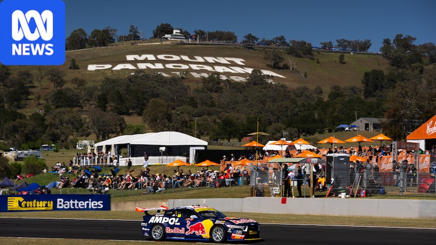
013ABC News · 2026-10-10 19:13:52 UTC
↗Bathurst 1000 weather, start time, how to watch and starting grid
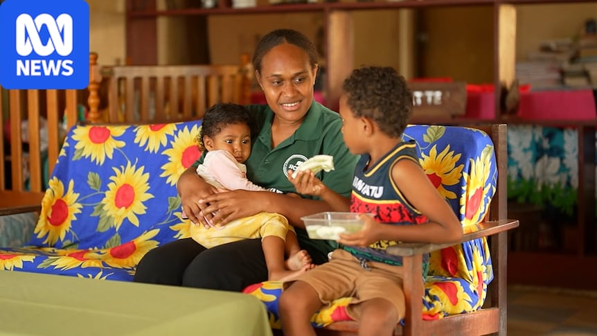
014ABC News · 2026-10-10 19:12:57 UTC
↗015Solomons MPs jet overseas for treatment while many citizens wait
ABC News · 2026-10-10 19:03:15 UTC
↗016Retracing the steps of Mark Dennis, 'brilliant' barrister with a dark side
ABC News · 2026-10-10 18:52:47 UTC
↗Sampling wizards The Avalanches mine magic from old ads and obsolete tech
Headlines 017—028 12 stories
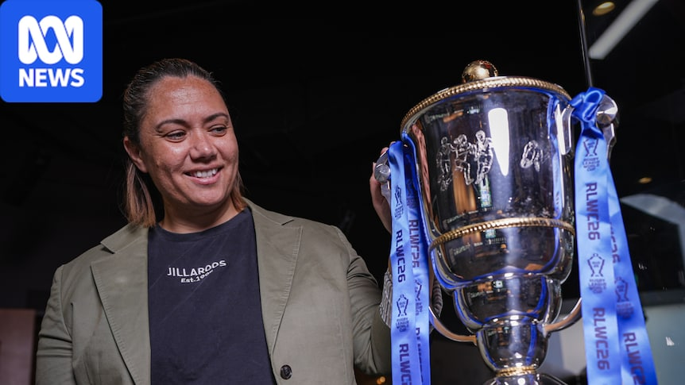
017ABC News · 2026-10-10 18:52:09 UTC
↗018The unconventional coach out to extend the Jillaroos reign
ABC News · 2026-10-10 18:48:28 UTC
↗Shipping companies offering sailors 'crazy money' to transit Strait of Hormuz
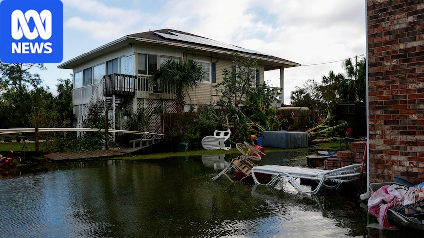
019ABC News · 2026-10-10 18:30:00 UTC
↗Hurricane Isaias kills at least four, leaves thousands without power in US
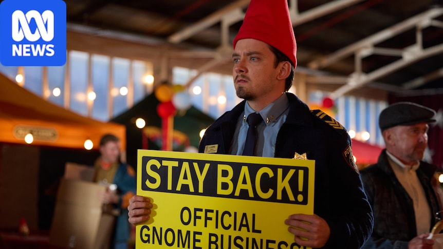
020ABC News · 2026-10-10 18:30:00 UTC
↗021New Australian comedy horror asks if we can still laugh at Nazis
SMH Business · 2026-10-11 05:00:00+11:00
↗022‘Trance-like’: How brands hack psychology of smell to make us spend more
SMH Business · 2026-10-09 18:10:00+11:00
↗The world’s richest person is testing Wall Street’s limits
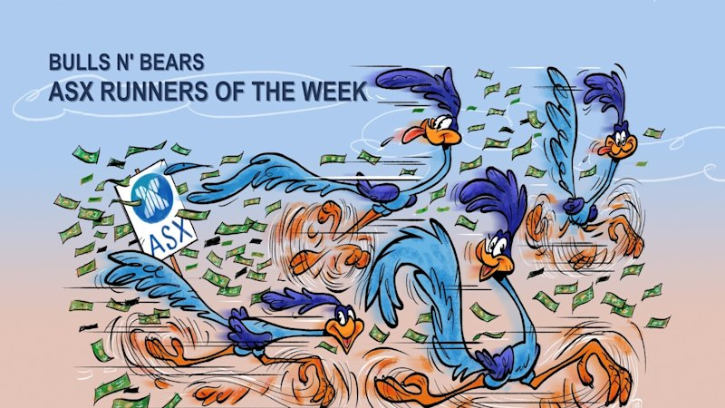
023SMH Business · 2026-10-09 17:04:36+11:00
↗ASX Runners of the Week: Alvo, Pioneer Minerals & Dalaroo
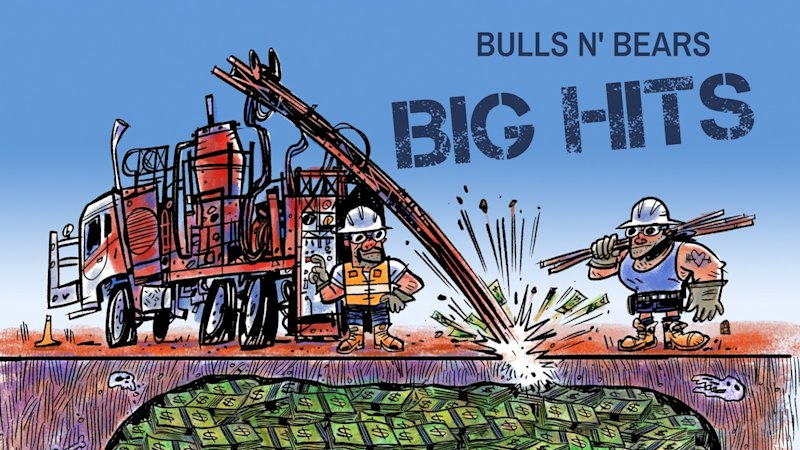
024SMH Business · 2026-10-09 16:31:58+11:00
↗025Big Hits: Dalaroo leads with stellar West African gold strike
SMH Business · 2026-10-09 16:16:15+11:00
↗026The Cap Raise Crucible: Big books, broker options and mixed fortunes
SMH Business · 2026-10-09 16:01:34+11:00
↗An old spectre has returned to haunt Europe and things could get ugly
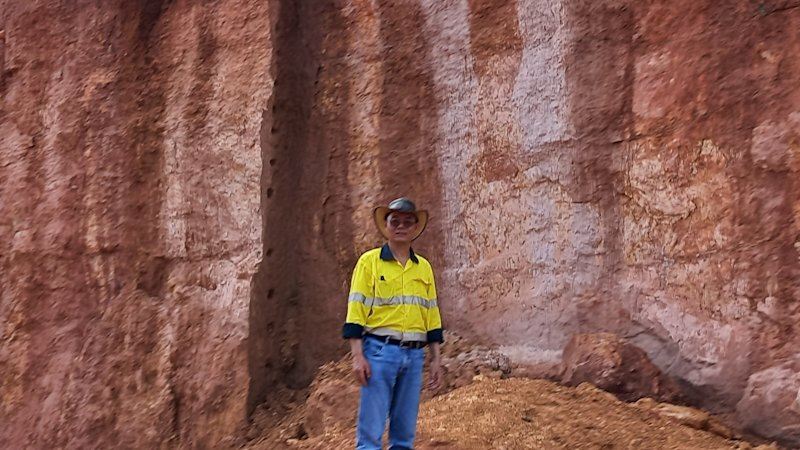
027SMH Business · 2026-10-09 14:35:37+11:00
↗Aurum strikes rich West African gold trifecta ahead of resource lift
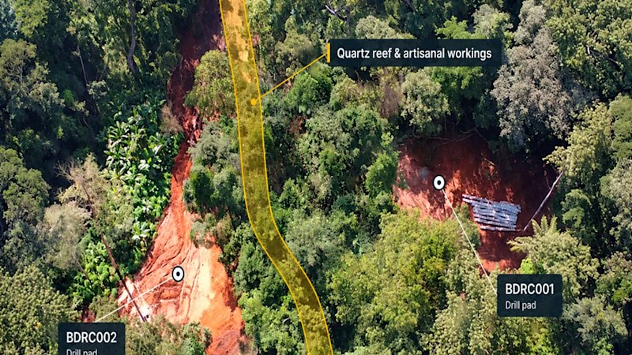
028SMH Business · 2026-10-09 13:25:53+11:00
↗Dalaroo chases more gold after spectacular Côte d’Ivoire hit
Headlines 029—040 12 stories
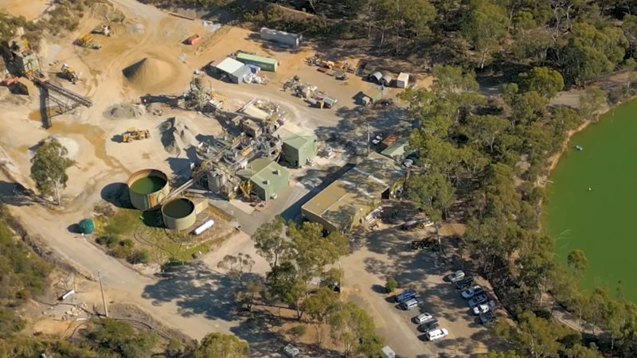
029SMH Business · 2026-10-09 13:18:27+11:00
↗030Kaiser Reef gold production fuels $40M war chest
SMH Business · 2026-10-09 11:40:32+11:00
↗Karl Stefanovic buys out his podcast partner
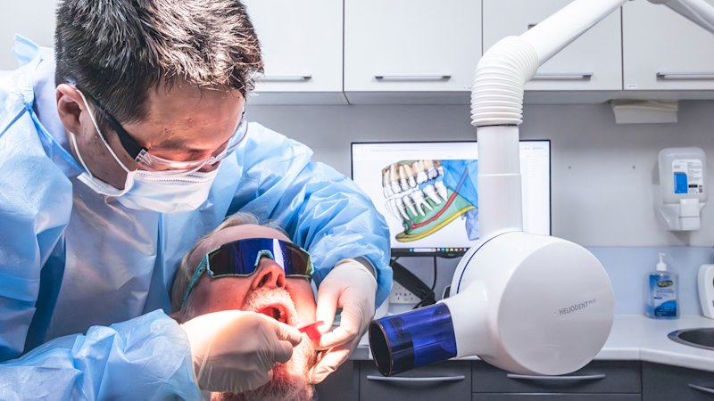
031SMH Business · 2026-10-09 11:35:00+11:00
↗64,000 shades of grey: How dentists, running coaches and restaurants are using AI
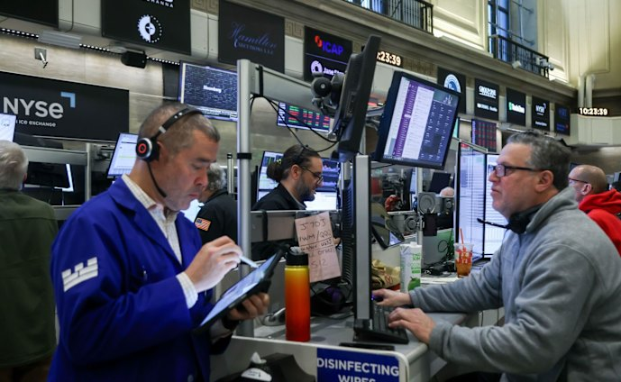
032SMH Business · 2026-10-09 11:01:40+11:00
↗Australian shares inch higher as caution reigns
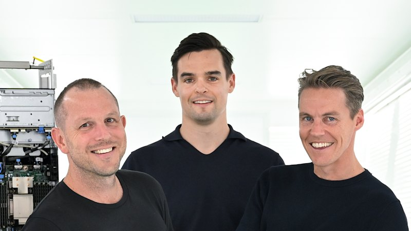
033SMH Business · 2026-10-09 09:08:35+11:00
↗034Oliver Curtis’ bid to float Firmus for $44 billion falls over
SMH Business · 2026-10-09 05:00:00+11:00
↗035City’s lively streets ‘sealed deal’ as luxury fragrance retailer buys $10.7m Little Collins store
SMH Business · 2026-10-09 05:00:00+11:00
↗036Why it’s time for you to ditch taking long annual holidays
SMH Business · 2026-10-09 05:00:00+11:00
↗ABC hopes embarrassing radio U-turn will deliver ratings dividend
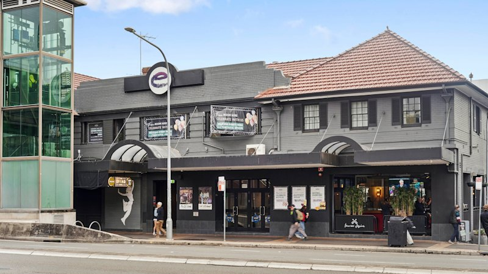
037SMH Business · 2026-10-09 05:00:00+11:00
↗038Wes Maas offloads $50m shopping mall as Firmus float fallout hits
SMH Business · 2026-10-08 20:20:07+11:00
↗039’Tis the season for (AI) shortcuts: Inside Coles and Woolies’ fight over Christmas
SMH Business · 2026-10-08 17:37:11+11:00
↗040ASX finishes lower as oil jumps again on renewed Iran tensions
SMH Business · 2026-10-08 17:06:27+11:00
↗Firmus float in trouble as investors don’t buy the hype
Headlines 041—052 12 stories
041 048
048
The Guardian · 2026-10-09 14:00:32 UTC
↗042Paul Barry: ‘People should not be off limits’
The Guardian · 2026-10-09 14:00:30 UTC
↗043As federal politicians vow to cut immigration, regional Queensland businesses need ‘every hand we can get’
The Guardian · 2026-10-09 06:05:45 UTC
↗044Adidas accuses Australian label White Fox of ‘trading off its reputation’ with use of four-stripe branding
The Guardian · 2026-10-09 04:37:55 UTC
↗045Firmus pulls biggest ASX float since Telstra amid investor doubt about datacentre company
The Guardian · 2026-10-08 00:57:58 UTC
↗046Datacentre company Firmus’s high flying valuation may be coming back down to earth ahead of expected ASX debut
MacroBusiness · 2026-10-10 00:59:34 UTC
↗The economic week in review
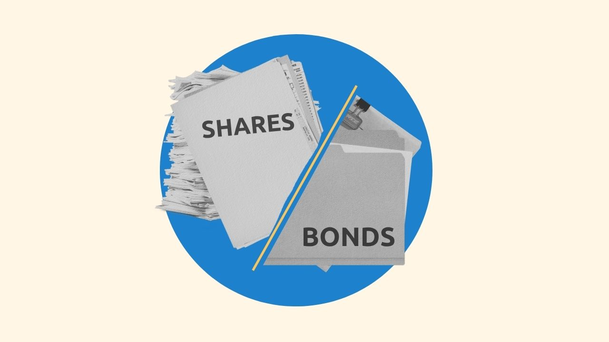
047MacroBusiness · 2026-10-09 22:25:47 UTC
↗Rethinking the 60/40 Portfolio
048MacroBusiness · 2026-10-09 13:01:13 UTC
↗049Weekend Reading and MB Media Appearances
MacroBusiness · 2026-10-09 01:00:45 UTC
↗050AEMO’s ISP fantasy plays energy users for fools
MacroBusiness · 2026-10-09 00:30:34 UTC
↗051Is Firmus the top?
MacroBusiness · 2026-10-09 00:00:44 UTC
↗052Stale property listings pile up across Australia
MacroBusiness · 2026-10-08 23:30:55 UTC
↗Pilbara killer takes big bite out of Fortescue
Headlines 053—060 8 stories
053
MacroBusiness · 2026-10-08 23:00:28 UTC
↗054Australia’s pipeline of unfinished homes bulges
MacroBusiness · 2026-10-08 22:30:31 UTC
↗055AI crushes Europe
MacroBusiness · 2026-10-08 22:00:20 UTC
↗Oil shortages return
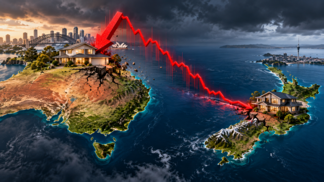
056MacroBusiness · 2026-10-08 21:00:35 UTC
↗057Australian house price falls track Kiwi housing crash
MacroBusiness · 2026-10-08 13:01:50 UTC
↗058Memo to business lobby: Mass immigration has wrecked productivity
MacroBusiness · 2026-10-08 01:00:54 UTC
↗059Nobody is buying Jim Chalmers’ inflation spin
MacroBusiness · 2026-10-08 00:30:18 UTC
↗How much more world trade can China steal?
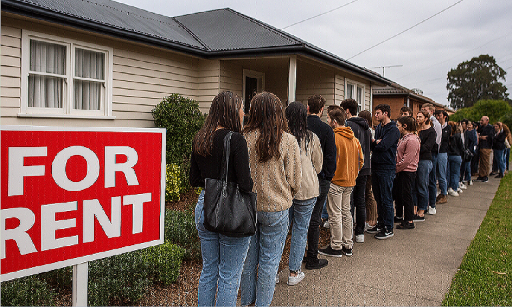
060MacroBusiness · 2026-10-08 00:00:28 UTC
↗